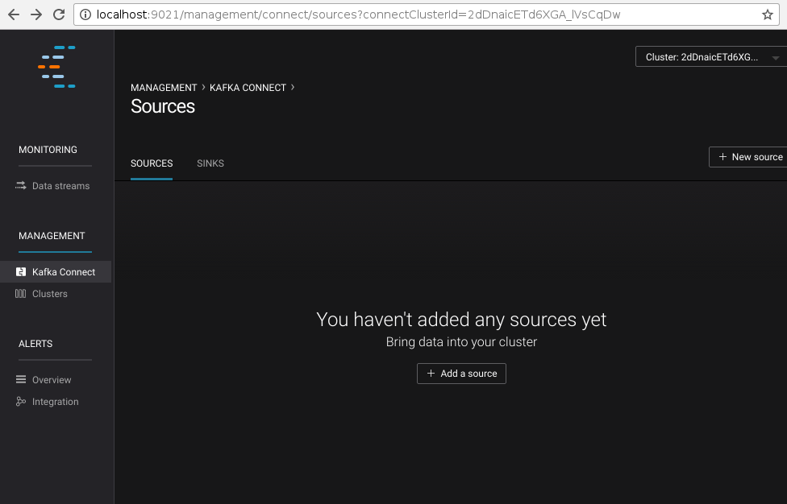

Sample application which uses Couchbase connector with Kafka Streams.
Prerequisites
This example demonstrates how to build a data pipeline using Kafka to
move data from Couchbase Server to a MySQL database. It assumes a
Couchbase Server instance with the beer-sample bucket deployed on
localhost and a MySQL server accessible on its default port (3306).
MySQL should also have a beer_sample_sql database. The following
snippet describes the schema of the database:
DROP DATABASE IF EXISTS beer_sample_sql;
CREATE DATABASE beer_sample_sql CHARACTER SET utf8 COLLATE utf8_general_ci;
USE beer_sample_sql;
CREATE TABLE breweries (
id VARCHAR(256) NOT NULL,
name VARCHAR(256),
description TEXT,
country VARCHAR(256),
city VARCHAR(256),
state VARCHAR(256),
phone VARCHAR(40),
updated_at DATETIME,
PRIMARY KEY (id)
);
CREATE TABLE beers (
id VARCHAR(256) NOT NULL,
brewery_id VARCHAR(256) NOT NULL,
name VARCHAR(256),
category VARCHAR(256),
style VARCHAR(256),
description TEXT,
abv DECIMAL(10,2),
ibu DECIMAL(10,2),
updated_at DATETIME,
PRIMARY KEY (id)
);This example is built on top of the Confluent Platform which also installed on localhost, along with the Couchbase connector. We will use the Confluent Control Center to configure the link, so make sure this service also is running. The commands below can be used to start all dependencies:
$ service couchbase-server start
$ service mysql-server start
# For RPM/DEB based Confluent Platform deployments the paths might be absolute.
$ ./bin/zookeeper-server-start ./etc/kafka/zookeeper.properties &
$ ./bin/kafka-server-start ./etc/kafka/server.properties &
$ ./bin/schema-registry-start ./etc/schema-registry/schema-registry.properties &
# Run connect framework in distributed mode
$ ./bin/connect-distributed $CONNECTOR_DIST/config/connect-distributed.properties
$ ./bin/control-center-start etc/confluent-control-center/control-center.propertiesNote that for the connect-distributed script we use the configuration
from the couchbase connector. You can use a stock configuration too, but
make sure that it will use Avro convertors and configure interceptors
for monitoring:
key.converter=io.confluent.connect.avro.AvroConverter
key.converter.schema.registry.url=http://localhost:8081
value.converter=io.confluent.connect.avro.AvroConverter
value.converter.schema.registry.url=http://localhost:8081
consumer.interceptor.classes=io.confluent.monitoring.clients.interceptor.MonitoringConsumerInterceptor
producer.interceptor.classes=io.confluent.monitoring.clients.interceptor.MonitoringProducerInterceptorCode Overview
The full code of this sample is accessible in the connector repository at src/test/java/examples/KafkaStreamsDemo.java.
try {
Class.forName("com.mysql.jdbc.Driver");
} catch (ClassNotFoundException e) {
System.err.println("Failed to load MySQL JDBC driver");
}
Connection connection = DriverManager
.getConnection("jdbc:mysql://localhost:3306/beer_sample_sql", "root", "secret");
final PreparedStatement insertBrewery = connection.prepareStatement(
"INSERT INTO breweries (id, name, description, country, city, state, phone, updated_at)" +
" VALUES (?, ?, ?, ?, ?, ?, ?, ?)" +
" ON DUPLICATE KEY UPDATE" +
" name=VALUES(name), description=VALUES(description), country=VALUES(country)," +
" country=VALUES(country), city=VALUES(city), state=VALUES(state)," +
" phone=VALUES(phone), updated_at=VALUES(updated_at)");
final PreparedStatement insertBeer = connection.prepareStatement(
"INSERT INTO beers (id, brewery_id, name, description, category, style, abv, ibu, updated_at)" +
" VALUES (?, ?, ?, ?, ?, ?, ?, ?, ?)" +
" ON DUPLICATE KEY UPDATE" +
" brewery_id=VALUES(brewery_id), name=VALUES(name), description=VALUES(description)," +
" category=VALUES(category), style=VALUES(style), abv=VALUES(abv)," +
" ibu=VALUES(ibu), updated_at=VALUES(updated_at)");The main function of the KafkaStreamsDemo class starts with loading
the MySQL driver, establishing connection and preparing insert
statements for both kinds of the documents: brewery and beer.
String schemaRegistryUrl = "http://localhost:8081";
Properties props = new Properties();
props.put(StreamsConfig.APPLICATION_ID_CONFIG, "streams-test");
props.put(StreamsConfig.BOOTSTRAP_SERVERS_CONFIG, "localhost:9092");
props.put(StreamsConfig.ZOOKEEPER_CONNECT_CONFIG, "localhost:2181");
props.put(AbstractKafkaAvroSerDeConfig.SCHEMA_REGISTRY_URL_CONFIG, schemaRegistryUrl);
props.put(StreamsConfig.KEY_SERDE_CLASS_CONFIG, KeyAvroSerde.class);
props.put(StreamsConfig.VALUE_SERDE_CLASS_CONFIG, ValueAvroSerde.class);
props.put(ConsumerConfig.AUTO_OFFSET_RESET_CONFIG, "earliest");The next block supplies the Streams configuration. Along with endpoints, it sets serializers and deserializers for keys and values, which appear in the Kafka topics. These values are written by the Couchbase connector. Here we use simple classes src/test/java/examples/serde/KeyAvroSerde.java and src/test/java/examples/serde/ValueAvroSerde.java, which do not make assumptions about the document body, but the real application might implement serdes, working with more specific classes.
KStreamBuilder builder = new KStreamBuilder();
KStream<String, GenericRecord> source = builder
.stream("streaming-topic-beer-sample");We start constructing the source stream by pulling data from the Kafka
topic streaming-topic-beer-sample.
KStream<String, JsonNode>[] documents = source
.mapValues(new ValueMapper<GenericRecord, JsonNode>() {
@Override
public JsonNode apply(GenericRecord value) {
ByteBuffer buf = (ByteBuffer) value.get("content");
try {
JsonNode doc = MAPPER.readTree(buf.array());
return doc;
} catch (IOException e) {
return null;
}
}
})
.branch(
new Predicate<String, JsonNode>() {
@Override
public boolean test(String key, JsonNode value) {
return "beer".equals(value.get("type").asText()) &&
value.has("brewery_id") &&
value.has("name") &&
value.has("description") &&
value.has("category") &&
value.has("style") &&
value.has("abv") &&
value.has("ibu") &&
value.has("updated");
}
},
new Predicate<String, JsonNode>() {
@Override
public boolean test(String key, JsonNode value) {
return "brewery".equals(value.get("type").asText()) &&
value.has("name") &&
value.has("description") &&
value.has("country") &&
value.has("city") &&
value.has("state") &&
value.has("phone") &&
value.has("updated");
}
}
);The first step in our pipeline would be to extract content from the
Couchbase event and deserialize it as JSON, as Couchbase operates with
JSON documents normally, and in beer-sample bucket in particular. With
branch operator, we split stream into two by the document type, and in
the same type we filter out documents that don’t have all the fields we
want to insert into the MySQL database.
documents[0].foreach(new ForeachAction<String, JsonNode>() {
@Override
public void apply(String key, JsonNode value) {
try {
insertBeer.setString(1, key);
insertBeer.setString(2, value.get("brewery_id").asText());
insertBeer.setString(3, value.get("name").asText());
insertBeer.setString(4, value.get("description").asText());
insertBeer.setString(5, value.get("category").asText());
insertBeer.setString(6, value.get("style").asText());
insertBeer.setBigDecimal(7, new BigDecimal(value.get("abv").asText()));
insertBeer.setBigDecimal(8, new BigDecimal(value.get("ibu").asText()));
insertBeer.setDate(9, new Date(DATE_FORMAT.parse(value.get("updated").asText()).getTime()));
insertBeer.execute();
} catch (SQLException e) {
System.err.println("Failed to insert record: " + key + ". " + e);
} catch (ParseException e) {
System.err.println("Failed to insert record: " + key + ". " + e);
}
}
});
documents[1].foreach(new ForeachAction<String, JsonNode>() {
@Override
public void apply(String key, JsonNode value) {
try {
insertBrewery.setString(1, key);
insertBrewery.setString(2, value.get("name").asText());
insertBrewery.setString(3, value.get("description").asText());
insertBrewery.setString(4, value.get("country").asText());
insertBrewery.setString(5, value.get("city").asText());
insertBrewery.setString(6, value.get("state").asText());
insertBrewery.setString(7, value.get("phone").asText());
insertBrewery.setDate(8, new Date(DATE_FORMAT.parse(value.get("updated").asText()).getTime()));
insertBrewery.execute();
} catch (SQLException e) {
System.err.println("Failed to insert record: " + key + ". " + e);
} catch (ParseException e) {
System.err.println("Failed to insert record: " + key + ". " + e);
}
}
});Once the documents are extracted and filtered we are ready to insert
them into the MySQL database using statements prepared earlier. Note
that inserted records are using the document ID from Couchbase, which
means that records will be updated in place automatically without
creating duplicates. This example does not handle document deletions or
expiration, but it won’t be complex to do with an additional stream that
executes DELETE statements
final KafkaStreams streams = new KafkaStreams(builder, props);
streams.start();
Runtime.getRuntime().addShutdownHook(new Thread(new Runnable() {
@Override
public void run() {
streams.close();
}
}));The last step is to execute the whole pipeline.
Running
We start by setting up the connector to relay the bucket contents into
the Kafka topic streaming-topic-beer-sample. It could be done either
using property files and connect-standalone as in
Quickstart, using REST interface of
connect-distributed or using Web UI provided by Control Center. We
will use the last two options.
By default Control Center starts at http://localhost:9021/. Connector
configuration is accessible in the "Kafka Connect" section:

Clicking on "New source" will open the configuration page of connectors.
Specify "Connection Name" as sample and "Connection Class" as
CouchbaseSourceConnector. Once the connector class is selected, the UI
will render a list of all accessible configuration properties:

The "Continue" button will lead to the next step where the form values are converted into JSON, which can be used to define the connector using the REST API:
$ curl -X POST -H "Content-Type: application/json" http://localhost:8083/connectors \
--data '{
"name": "sample",
"connector.class": "com.couchbase.connect.kafka.CouchbaseSourceConnector",
"tasks.max": 2,
"connection.cluster_address": "localhost",
"connection.bucket": "beer-sample",
"topic.name": "streaming-topic-beer-sample"
}'Submitting the form (or using a REST call) will register the new Connector link and start it immediately.
Now lets pull the sample sources and build them:
$ git clone git://github.com/couchbase/kafka-connect-couchbase
$ cd kafka-connect-couchbase
$ mvn test-compile
$ java -cp ./target/test-classes:$(mvn dependency:build-classpath | grep ^/) \
examples.KafkaStreamsDemo